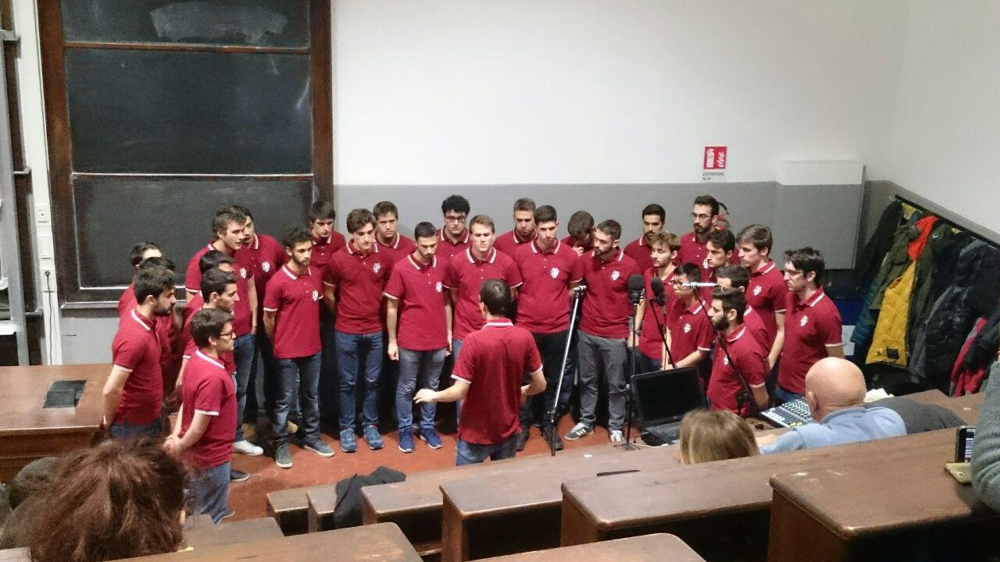

Il Coro Alpini Politecnico nasce tra le aule del Politecnico di Milano dall’interesse di alcuni amici per il canto popolare. Ispirato principalmente dal Coro della SAT, il suo repertorio comprende esclusivamente canti di montagna, tradizionali e d’autore. Essendo formato interamente da studenti, è interessato da un ricambio generazionale che lo porta ad essere sempre in continua evoluzione. Dal settembre 2004 il coro assume la forma odierna, includendo tra le sue fila studenti di ingegneria e di architettura sede Leonardo.
Perché vale la pena di cantare ancora questi canti? Prima di tutto perché sono belli. Poi perché esprimono in modo semplice, talvolta anche poetico, una posizione umana vera di fronte alla realtà della vita: dallo stupore per i monti alla durezza della guerra. Sono descrittivi di un’apertura alla realtà totalmente positiva. Per questo è facile immedesimarsi. Essi ci sono dati. Riesumandoli oggi si ha tutto il sapore dell’antico, del tradizionale che, per sua natura, essendo più sperimentato, è più profondo di ciò che è inventato ora.
(Dalla mostra sui fratelli Pedrotti, meeting 2006)